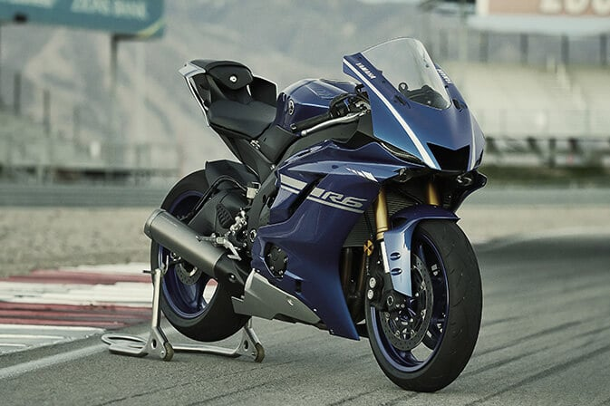
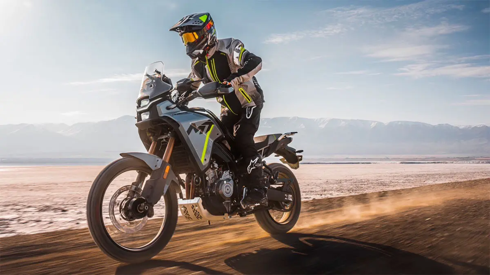

Motocicleta Enduro
Las motos enduro son motos obligatoriamente de una cilindrada mayor a 125 2 tiempos o 250 4 tiemposs
Motocicleta Racing
CONCEPTO
Las motos racing, también llamadas “pisteras” son motocicletas de estilo deportivo y generalmente de medio o alto cilindraje, hechas para la velocidad y la máxima eficiencia en las distancias medias y largas
tiendaMotocicleta Naked

CONCEPTO
Generalmente las motos naked se construyen con un tanque más grande y más largo. Además, este tipo de motocicletas también tienen controles de pie más traseros para evitar que las estriberas raspen el pavimiento, especialmente durante las curvas. Generalmente tienen sus controles de pie colocados más en el centro con un manillar de elevación más alto. Por tanto, la ubicación del manillar como de los controles de pie afecta también a la postura del motorista, así como a la silueta general de la moto.
tiendaMotocicleta touring
CONCEPTO
Son motos diseñadas para viajes largos a una velocidad normal o elevada, en las cuales se puede viajar cómodamente, pudiendo realizar un tipo de conducción similar a la sport.
tienda